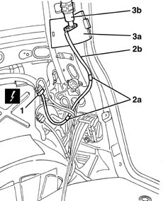
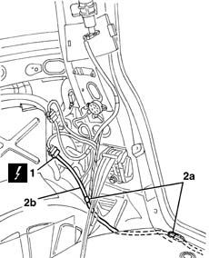
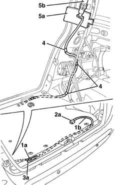
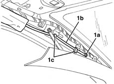
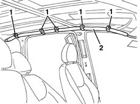
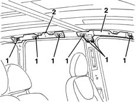
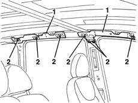
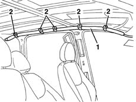
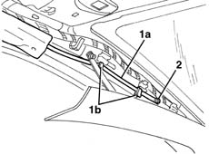
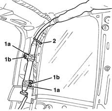

5580C52 AIR BAG MODULE with BLIND (one- ) (head),bag left or right - R.R. with interfering components removed
- Path
- Procedures > 55 ELECTRICAL EQUIPMENT > 5580 SPECIAL ACCESSORIES > 5580C AIR BAG SYSTEM > 5580C52 AIR BAG MODULE with BLIND (one- ) (head),bag left or right - R.R. with interfering components removed
- Kind
- repair procedure (removal / refitting; the operation number is the code)
- Applies to
- all engines; all production periods
- Interactive page
- https://sloeber94.github.io/elrnDB-fMltpl/en/#/2891978
Applies to: all engines; all production periods
Applies to: all engines; production: da 09/03, da 04/02 a 08/03
 Removing
Removing
 Refitting
RefittingProceed as follows for the right Window Bag module.
1. Working on the right side of the luggage compartment, release the electrical connection from the bodyshell and disconnect it.
 | Name | Connector |
|---|---|---|
1 | Passenger Window Bag |
2. Release the retainers (2a) for the wiring (2b) from the bodyshell.
3. Open the protection (3a) for the Window Bag connection (3b).

Applies to: all engines; production: da 09/03, da 04/02 a 08/03
Proceed as follows for the left Window Bag module.
1. Working on the right side of the luggage compartment, release the electrical connection from the bodyshell and disconnect it.
| Name | Connector |
|---|---|---|
1 | Driver's Window Bag |
2. Release the retainers (2a) for the wiring (2b) from the bodyshell.

Applies to: all engines; production: da 09/03, da 04/02 a 08/03
Proceed as follows for the left Window Bag module.
1. Release the retainer (1a) from the left Window Bag wiring (1b).
2. Connect a sensor to the end (2a) of the Window Bag cable (1b) (this operation is required to facilitate the subsequent fitting of the cable inside the bodyshell).
3. Extract the cable (1b) from the bodyshell, pulling it through the opening (3a).
4. Release the Window Bag wiring retainers.
5. Open the protection (5a) for the Window Bag (5b) connection.

Applies to: all engines; production: da 09/03, da 04/02 a 08/03
Proceed as follows for the Window Bag modules on both sides.
1. Working in the area of the luggage compartment pillar, undo the bolts (1a) and release the inner retainers (1b).
2. Cut the band.
Applies to: all engines; production: da 09/03, da 04/02 a 08/03
1. Working in the area of the front pillar, undo the bolt (1a) and release the rod (1b) for the Window Bag from the retainers (1c).

Applies to: all engines; production: da 09/03, da 04/02 a 08/03
1. Undo the curtain retaining nuts
2. Remove the Window Bag.

Applies to: all engines; production: da 09/03, da 04/02 a 08/03
1. Undo the bolts if necessary
2. Remove the supports.

Applies to: all engines; production: da 09/03, da 04/02 a 08/03
Refitting
RemovingFollow these precautions.
Detach the removable part of the adhesive label from the new module and put it in a specific file recording the vehicle details (model, registration data, chassis no.) and the serial no. of the old module. This file should be kept for future checks. A new label is supplied together with the module, to be stuck on top of the existing one. However, it should first be perforated to indicate the month and 14 years after the year when the module is fitted (e.g. 2016 will correspond to 2002).
1. Refit the supports if they were removed.
2. Tighten the bolts.

Applies to: all engines; production: da 09/03, da 04/02 a 08/03
1. Fit the Window Bag module.
2. Tighten the bolts fixing the curtain.

Applies to: all engines; production: da 09/03, da 04/02 a 08/03
1. Attach the front rod (1a) to the retainer (1b).
2. Tighten the front rod retaining bolt

Applies to: all engines; production: da 09/03, da 04/02 a 08/03
1. Attach the retainers (1a) and tighten the bolts (1b) fixing the rear pipe.
2. Fit the band.

Applies to: all engines; production: da 09/03, da 04/02 a 08/03
Proceed as follows for the left Window Bag module.
Close the Window Bag connection protection.
Attach the Window Bag wiring retainers.
Using the sensor, insert the Window Bag cable into the bodyshell via the opening.
Attach the Window Bag wiring to the retainer.
Attach the wiring retainers fo the bodyshell.
Connect the electrical connection and attach it to the bodyshell retainer.
Proceed as follows for the right Window Bag module.
Close the Window Bag connection protection.
Attach the wiring retainers to the bodyshell.
Connect the electrical connection and attach it to the bodyshell retainer.